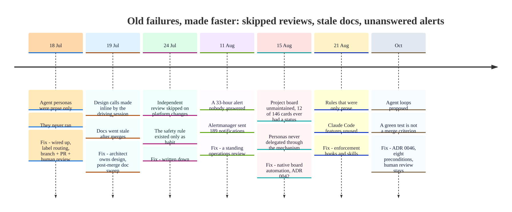
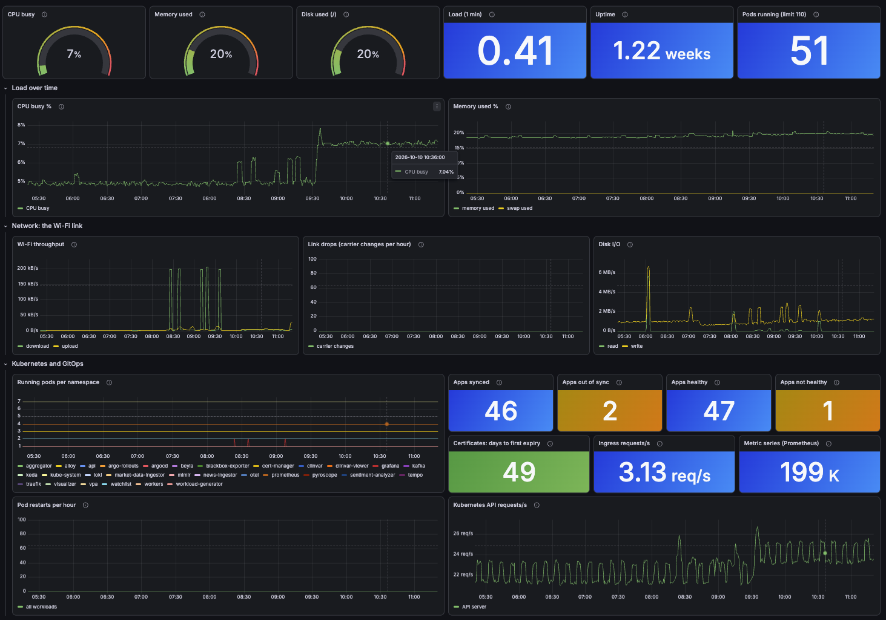
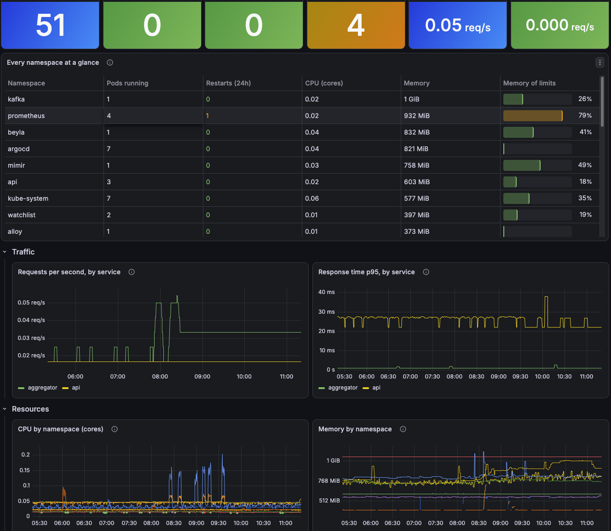
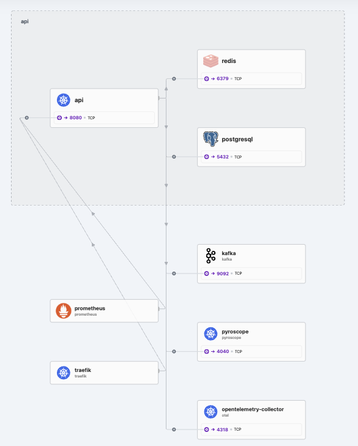

AdamastorX · homelab platform · 12 weeks
Building with AI agents:
the loop, what went wrong, and the gates
One owner, four repos, one single-node Kubernetes cluster.
Opening. Everything here is about one project with one owner. It is an observation, not a benchmark. Every claim in the deck has a source in the repo.
Part A · how the work flows
The loop

Walk top to bottom and point at the three orange boxes: the human sets direction, the human reviews and merges, the human answers the alert. Agents work in the middle. Nothing merges itself, whoever wrote it. Source: .claude/WORKFLOW.md.
Roles
Five personas, least privilege
| Persona | Owns | Tools |
|---|
architect | design calls, ADRs | Read, Grep, Glob, Write. No Edit, no Bash |
platform-engineer | Terraform, Helm, ArgoCD, CI | + Edit, Bash |
backend-engineer | Spring Boot, Kafka, Redis, Postgres | + Edit, Bash |
observability-engineer | telemetry, dashboards, alerts, SLOs | + Edit, Bash |
documentation-engineer | READMEs, ADRs after a merge | no Bash |
The main session routes each issue by label. A persona is a role and a limit.
The point is not having many agents; it is separating contexts and giving each only the power it needs. The architect cannot change code, so a design decision has to land as an ADR. Source: .claude/agents/*.md, WORKFLOW.md.
Project management
Plain GitHub, plus one honest source of truth
- Issue = backlog item: purpose, acceptance criteria, dependencies, priority, labels
- Definition of Ready / Done; Done includes the human reviewing and merging
- Milestones M0–M17, "ordered by goal, not a hard gate"
- Org project board, five columns: Inbox, Ready, In Progress, Review, Done
- The real source of truth is
docs/roadmap/backlog.md; the board mirrors it
The Markdown backlog wins, the board is a mirror. That was not the design; it is what we learned (see the friction slide). Sources: .claude/PROJECT.md, docs/roadmap/milestones.md, project-board.md, ADR 0042.
Reviews
Reviews come in layers
- A persona agent authors the change and opens a PR
- Required CI runs the mechanical checks
- An independent review by a fresh agent, never the author, for platform-impacting changes
- The owner reviews and merges
- Periodically, a staff-level review of the whole system
"A second, unbiased read, not a rubber stamp from the same context that already talked itself into the approach."
The quote is literal from WORKFLOW.md, and it was written after the step was skipped on the first platform changes. Source: .claude/WORKFLOW.md.
Staff-level analysis
An independent audit, on a schedule
| Date | What it found |
|---|
| 2026-08-06, 08-09 | Drift between docs and reality; live access added |
| 2026-08-11 | "Never ship a component without its alert" violated for a whole class; rebuild had no whole-system acceptance criteria |
| 2026-08-15 | A 33-hour alert nobody answered: build rate had outrun operate rate |
| 2026-08-21 | Full audit: untracked debt, prose-only rules, Claude Code features unused |
| 2026-10-01 | Agent loops: "adopt, narrowed"; human outer loop "unchanged, and load-bearing" |
Rule: verify live, do not assume. Each review ends with a review of itself.
These are measured facts from the live cluster that became backlog items and ADRs, not generic advice. Sources: docs/reviews/*.md, docs/operations/2026-08-11-cycle-1-the-33-hour-incident.md.
The human in the loop
Where people sit
| The human decides | Example |
|---|
| Direction and priorities | the four objectives every review is graded against |
| Design trade-offs | the architect writes the ADR, the owner accepts it |
| What merges | every PR, however small |
| What touches the live system | a mutating kubectl needs explicit confirmation |
| Keep or kill | "keep Mimir", recorded as a decision |
| The physical world | a network cable, a router reservation |
| Answering the alert | the 33-hour incident |
The human role is deciding, accepting accountability and acting in the physical world. Sources: WORKFLOW.md, backlog #135 and #162.
An experiment
Bounded agent loops
1
iteration to green
$0.37, diff identical to the human PR8
preconditions
one of them: no KUBECONFIG in the loop
- Verdict: adopt, narrowed, as a technique, not a working model
- It converged in one step because the task was fully specified; $0.37 is a floor
- "The test went green" is never a merge criterion.
Tell it honestly, including the review's own critique: two agents agreeing shows the patch is the obvious one, not that it is correct. Sources: docs/reviews/2026-10-01-agentic-working-model-assessment.md, docs/runbooks/verified-agentic-loop.md, ADR 0046.
Part B · what went wrong
The agents did not follow the workflow

Set up the three-cause split on the next slide. Sources: commits 0975d44, 30f50c7, b135581; ADR 0042; docs/operations/2026-08-11-cycle-1-the-33-hour-incident.md.
Three different causes
Only the last one is about willpower
- A configuration bug (Jul 18). The persona files were prose only and "never ran": no frontmatter, so the Agent tool could not invoke them.
- Convenience (Jul 19–24). Design calls were made inline by the driving session instead of the architect; independent review "didn't happen" on the first platform changes.
- Friction (Aug 15). Personas "never delegated to through the mechanism"; of 146 board cards, 12 ever had a status.
The first was our configuration error, not the AI disobeying. The second is the natural shortcut. The third is how any human team behaves.
The lesson
A process survives in proportion to how much friction it takes to skip it, not how well-reasoned it was when written down.
ADR 0042
- Review-before-merge survived because skipping it has consequences. The board did not, because skipping it costs nothing.
- The fix was never "tell the agents harder". It was: make the right thing the easy thing.
The central sentence of Part B, and it is from the project's own ADR.
Gates are not proof
Green is not correct
- Cluster rebuild: 35/35 scrape targets up,
cilium status OK, and the system was broken in three places. The checks tested components, not the business path.
- An alert that could never fire: a
> between metrics with different labels. It passed review and CI; a live query found it.
- Kafka heap: every comment said "75% of the limit"; it was a percentage of the host's RAM. The broker kept getting OOM-killed until
jcmd showed the real value.
- "Done" that wasn't live: a merge to a manual-sync Application changes nothing until someone syncs it.
Some of these were the AI's own mistakes. That is the point: the weak spot is the process, not one model.
Sources: docs/reviews/2026-08-11 (4b.3), docs/SESSION_STATE.md, backlog #123, #142, #161.
The thesis
AI amplifies what is already there
Amplified for the better- ADRs, small single-concern PRs
- tests written to fail first
- 536 merged PRs in 12 weeks
- docs updated in the same PR
Amplified for the worse- decisions made inline, unreviewed
- rules that exist only as prose
- an alert nobody answers (33 h)
- a board nobody maintains
Building got cheap. What stayed scarce: review, decisions, operation, accountability.
One project, one owner, no human-only baseline. An observation, not a benchmark.
Mark clearly that this is a single case, not a productivity measurement.
My view
The bottleneck is the human
- Detection worked: 189 notifications delivered, zero failures. The response was human, up to 33 hours later.
- This week's blockers were human or physical: a merge decision, a router reservation, which updates to accept, whether to keep a component.
- Faster agents move the queue to the human; they don't remove it.
Roles change, people stay.
- Dev: less typing, more specifying, designing gates, reviewing
- Ops: less running things, more owning the signal and the response
- New: someone builds and maintains the guardrails
- People remain for accountability, judgment under ambiguity, and the physical world
This part is opinion; present it as such. The evidence is the staff reviews, the where-people-sit slide and the three causes. Source: the 33-hour incident write-up.
Part C · gates and guardrails
What we actually have

Do not read the whole list. Pick one per layer and tell a story: the Trivy CVE gate, the hook that stops a kubectl delete without confirmation. Sources: each repo's ci workflow, WORKFLOW.md, verified-agentic-loop.md.
Honest gaps · checked 2026-10-09
What the gates don't cover
- GitHub requires 0 approvals in all four repos: "the human reviews" is a rule, not an enforcement
observability has no required status checkenforce_admins is off everywhere- NetworkPolicies are not on every namespace yet (#126)
- The confirmation hook is a speed bump for one operator, not a security boundary
- A green gate can still mean a wrong system: the answer is business-path checks (#123)
Showing the gaps makes the talk more credible than the gate list alone. Sources: gh api branches/main/protection, backlog #126 and #123.
Part D · Demo
The infrastructure, on one screen

- One mini PC: CPU 7%, memory 20%, disk 20%, 51 pods running
- The Wi-Fi link is on the dashboard: throughput and carrier drops
- GitOps state: 46 apps synced, 47 healthy, 1 not healthy
- Values at the time of the screenshot
Grafana, "Infrastructure overview". Gauges turn amber at 70% and red at 90%. Point at the Wi-Fi panels: the cluster runs on a USB Wi-Fi dongle, so link drops are a first-class signal. The amber "apps out of sync / not healthy" tiles are real: one app is Degraded and one manual-sync app is intentionally out of sync. Source: the generator in platform/scripts/gen-slo-dashboards.py.
Part D · Demo
The services: what is running and how loaded

- 51 pods running, none unready, none restarting at the moment this was taken
- Memory against limits per row: Kafka is the biggest consumer; Prometheus at 79% of its limit is the one to watch
- Requests and p95 latency per service underneath
Grafana, "Services overview". The table in this capture groups by namespace; it has since been changed to one row per workload, so re-capture before presenting. Traffic is deliberately low (the applications exist to generate load and failure modes, not users), so the request panels are quiet.
Part D · Demo
The network: who talks to whom

- Inside the namespace: the API, its PostgreSQL and its Redis
- Outside it: Kafka, Pyroscope, the OpenTelemetry collector, Prometheus, Traefik
- A namespace is a home, not a service: the map shows traffic, not ownership
- Cilium + Hubble (eBPF), network policies decide what is allowed
Hubble UI shows one namespace at a time; the peers around it are other namespaces. The API is the right example because it has network policies (api, postgresql, redis and a Pyroscope-egress policy), so the picture matches what is allowed. 21 other namespaces have no policy yet (backlog #168). For the data flow of the market pipeline use the event-flows diagram; Hubble shows connections, not Kafka topics.
Takeaways
Three things to take home
- Make the right thing the easy thing. Prose rules decay; mechanical ones last.
- Gates are not proof. Verify against the real system, and say what you didn't verify.
- AI moves the bottleneck, it doesn't remove it. Plan for the human who reviews, decides and answers the page.
One owner · one system · twelve weeks · no control group.
Close with the thesis: the work becomes designing the system in which humans and agents work together.
· ← → navigate · N notes · F fullscreen